File: 000330.gt.txt (if the image is defective, simply delete all Arabic text and the line will be excluded)
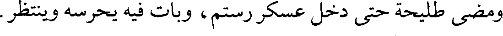
ومضى طليحة حتى دخل عسكر رستم، وبات فيه يحرسه وينظر.
File: 000331.gt.txt (if the image is defective, simply delete all Arabic text and the line will be excluded)
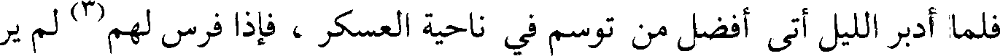
فلما أدبر الليل أتى أفضل من توسم في ناحية العسكر، فإذا فرس لهم(1) لم ير
File: 000332.gt.txt (if the image is defective, simply delete all Arabic text and the line will be excluded)
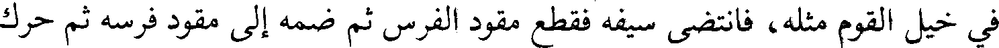
في خيل القوم مثله، فانتضى سيفه فقطع مقود الفرس ثم ضمه إلى مقود فرسه ثم حرك
File: 000333.gt.txt (if the image is defective, simply delete all Arabic text and the line will be excluded)
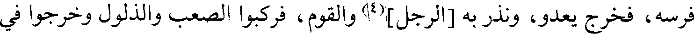
فرسه، فخرج يعدو، ونذر به [الرجل](4) والقوم، فركبوا الصعب والذلول وخرجوا في
File: 000334.gt.txt (if the image is defective, simply delete all Arabic text and the line will be excluded)
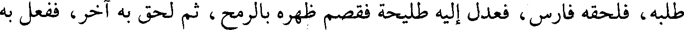
طلبه، فلحقه فارس، فعدل إليه طليحة فقصم ظهره بالرمح، ثم لحق به آخر، ففعل به
File: 000335.gt.txt (if the image is defective, simply delete all Arabic text and the line will be excluded)
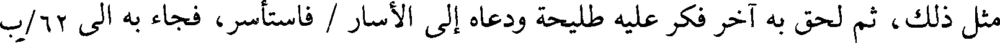
مثل ذلك، ثم لحق به آخر فكر عليه طليحة ودعاه إلى الأسار / فاستأسر، فجاء به الى 62/ب
File: 000336.gt.txt (if the image is defective, simply delete all Arabic text and the line will be excluded)
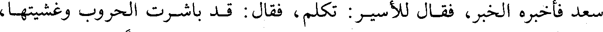
سعد فأخبره الخبر، فقال للأسير : تكلم، فقال : قد باشرت الحروب وغشيتها،
File: 000337.gt.txt (if the image is defective, simply delete all Arabic text and the line will be excluded)
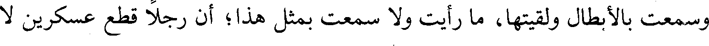
وسمعت بالأبطال ولقيتها، ما رأيت ولا سمعت بمثل هذا؛ أن رجلا قطع عسكرين لا
File: 000338.gt.txt (if the image is defective, simply delete all Arabic text and the line will be excluded)
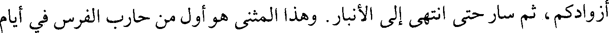
أزوادكم، ثم سار حتى انتهى إلى الأنبار. وهذا المثنى هو أول من حارب الفرس في أيام
File: 000339.gt.txt (if the image is defective, simply delete all Arabic text and the line will be excluded)
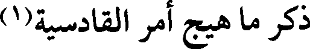
ذكر ما هيج أمر القادسية(1)
File: 000340.gt.txt (if the image is defective, simply delete all Arabic text and the line will be excluded)
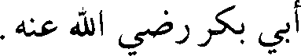
أبي بكر رضي الله عنه.
File: 000341.gt.txt (if the image is defective, simply delete all Arabic text and the line will be excluded)
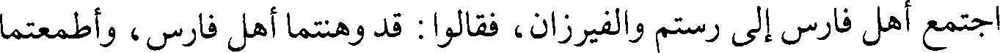
اجتمع أهل فارس إلى رستم والفيرزان، فقالوا : قد وهنتما أهل فارس، وأطمعتما
File: 000342.gt.txt (if the image is defective, simply delete all Arabic text and the line will be excluded)
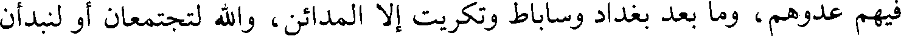
فيهم عدوهم، وما بعد بغداد وساباط وتكريت إلا المدائن، والله لتجتمعان أو لنبدأن
File: 000343.gt.txt (if the image is defective, simply delete all Arabic text and the line will be excluded)
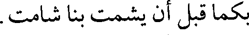
بكما قبل أن يشمت بنا شامت.
File: 000344.gt.txt (if the image is defective, simply delete all Arabic text and the line will be excluded)
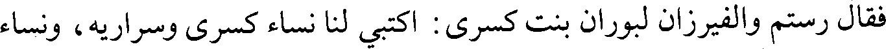
فقال رستم والفيرزان لبوران بنت كسرى: اكتبي لنا نساء كسرى وسراريه، ونساء
File: 000345.gt.txt (if the image is defective, simply delete all Arabic text and the line will be excluded)
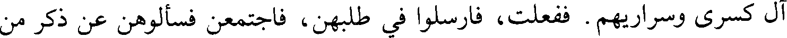
آل كسرى وسراريهم . ففعلت، فأرسلوا في طلبهن، فاجتمعن فسألوهن عن ذكر من
File: 000346.gt.txt (if the image is defective, simply delete all Arabic text and the line will be excluded)
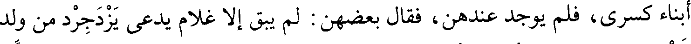
أبناء كسرى، فلم يوجد عندهن، فقال بعضهن : لم يبق إلا غلام يدعى يزدجرد من ولد
File: 000347.gt.txt (if the image is defective, simply delete all Arabic text and the line will be excluded)
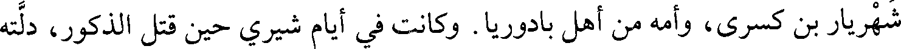
شهريار بن كسرى، وأمه من أهل بادوريا . وكانت في أيام شيري حين قتل الذكور، دلته
File: 000348.gt.txt (if the image is defective, simply delete all Arabic text and the line will be excluded)
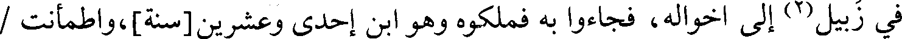
في زبيل(2) إلى أخواله، فجاءوا به فملكوه وهو ابن إحدى وعشرين [سنة]، واطمأنت /
File: 000349.gt.txt (if the image is defective, simply delete all Arabic text and the line will be excluded)
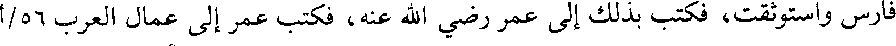
فارس واستوثقت، فكتب بذلك إلى عمر رضي الله عنه، فكتب عمر إلى عمال العرب 56/أ
File: 000350.gt.txt (if the image is defective, simply delete all Arabic text and the line will be excluded)
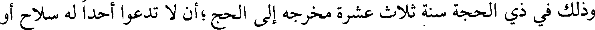
وذلك في ذي الحجة سنة ثلاث عشرة مخرجه إلى الحج ؛أن لا تدعوا أحدا له سلاح أو
File: 000351.gt.txt (if the image is defective, simply delete all Arabic text and the line will be excluded)
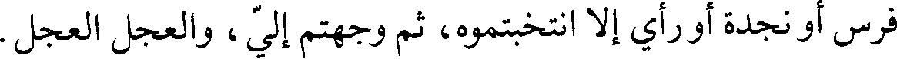
فرس أو نجدة أو رأي إلا انتخبتموه، ثم وجهتم إلي ، والعجل العجل.
File: 000352.gt.txt (if the image is defective, simply delete all Arabic text and the line will be excluded)
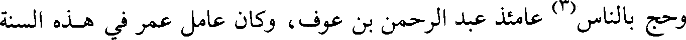
وحج بالناس(3) عامئذ عبد الرحمن بن عوف، وكان عامل عمر في هذه السنة
File: 000353.gt.txt (if the image is defective, simply delete all Arabic text and the line will be excluded)
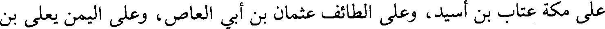
على مكة عتاب بن أسيد، وعلى الطائف عثمان بن أبي العاص، وعلى اليمن يعلى بن
File: 000354.gt.txt (if the image is defective, simply delete all Arabic text and the line will be excluded)
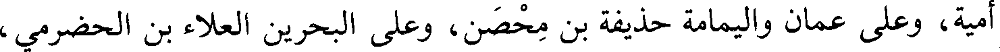
أمية، وعلى عمان واليمامة حذيفة بن محصن، وعلى البحرين العلاء بن الحضرمي ،
File: 000355.gt.txt (if the image is defective, simply delete all Arabic text and the line will be excluded)
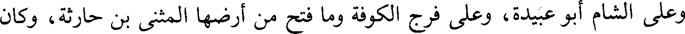
وعلى الشام أبو عبيدة، وعلى فرج الكوفة وما فتح من أرضها المثنى بن حارثة، وكان
File: 000356.gt.txt (if the image is defective, simply delete all Arabic text and the line will be excluded)
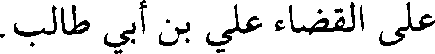
على القضاء علي بن أبي طالب.
File: 000357.gt.txt (if the image is defective, simply delete all Arabic text and the line will be excluded)
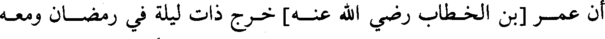
أن عمر [بن الخطاب رضي الله عنه] خرج ذات ليلة في رمضان ومعه
File: 000358.gt.txt (if the image is defective, simply delete all Arabic text and the line will be excluded)
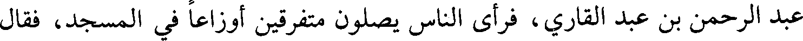
عبد الرحمن بن عبد القاري، فرأى الناس يصلون متفرقين أوزاعا في المسجد، فقال
File: 000359.gt.txt (if the image is defective, simply delete all Arabic text and the line will be excluded)
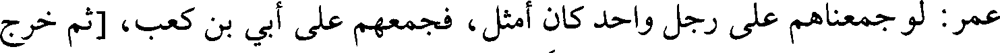
عمر: لو جمعناهم على رجل واحد كان أمثل ، فجمعهم على أبي بن كعب، [ثم خرج
To Save: `Ctrl+s`, make sure to choose `Webpage, complete`!